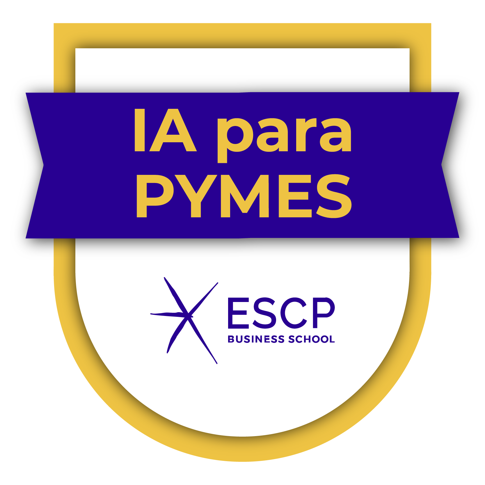

Seguridad Alimentaria · Prevención de Riesgos Laborales · Medio Ambiente
Soluciones técnicas basadas en más de 25 años de experiencia, combinadas con nuevas herramientas de formación asistida por Inteligencia Artificial.
Formación más accesible para equipos internacionales, con asistentes especializados capaces de orientar al alumno y facilitar la comprensión de los contenidos en distintos idiomas.
Soluciones técnicas adaptadas a cada empresa para cumplir la normativa, reducir riesgos, formar a los trabajadores y mejorar sus procesos.
Revisión de instalaciones, procesos, documentación y prácticas de trabajo, con informe técnico y propuesta de medidas correctoras.
Diseño, actualización y verificación de APPCC, planes generales de higiene, registros, trazabilidad y procedimientos adaptados a cada actividad.
Toma de muestras de alimentos, agua y superficies, con interpretación de resultados y propuesta de medidas correctoras.
Formación en Seguridad Alimentaria, manipulación de alimentos y otras materias técnicas, presencial y online, con apoyo de nuevas herramientas de IA.
Formación, asesoramiento y apoyo técnico en prevención para empresas, trabajadores y autónomos.
Formación y asesoramiento en gestión ambiental, sostenibilidad, residuos, economía circular y buenas prácticas ambientales.
La formación es realmente útil cuando el trabajador puede comprenderla, consultarla y aplicarla.
En OLINK MARQUEZ incorporamos asistentes de Inteligencia Artificial especializados que acompañan al alumno durante su formación y pueden atender sus consultas en distintos idiomas.
Una herramienta especialmente útil para empresas con plantillas internacionales, facilitando la comprensión de conceptos técnicos y reduciendo las barreras lingüísticas.
Tecnología al servicio de la formación, siempre sobre contenidos desarrollados y supervisados por profesionales especializados.
Manipulación de alimentos, higiene, APPCC, alérgenos y otros contenidos específicos del sector.
Acceder a Formación en Seguridad AlimentariaFormación preventiva y contenidos orientados a trabajadores, autónomos y empresas.
Acceder a Formación PRLOLINK MARQUEZ AUDITORES Y FORMADORES S.L. nace de la experiencia profesional de Miguel Marfil y Nieves Márquez con el objetivo de ofrecer a empresas y profesionales soluciones especializadas en formación, auditoría y consultoría técnica.
Miguel Marfil, veterinario colegiado, Auditor Higiénico-Sanitario y Técnico Superior en Prevención de Riesgos Laborales, cuenta con más de 25 años de experiencia en inspección, auditoría, formación y consultoría para empresas.
Nuestra actividad integra Seguridad Alimentaria, Prevención de Riesgos Laborales y Medio Ambiente, incorporando nuevas herramientas de Inteligencia Artificial para mejorar la formación, facilitar el acceso al conocimiento y adaptarlo a plantillas cada vez más diversas e internacionales.
Áreas de especialización: Seguridad Alimentaria, APPCC, auditorías higiénico-sanitarias, Prevención de Riesgos Laborales, Medio Ambiente, toma de muestras, formación profesional y peritajes técnicos.
¿Qué incluye una auditoría higiénico-sanitaria?
Revisión de instalaciones, procesos, documentación, sistemas de autocontrol, prácticas de trabajo y, cuando procede, toma de muestras y propuesta de medidas correctoras.
¿Cada cuánto se recomienda realizar una auditoría?
La periodicidad depende del tipo de actividad, nivel de riesgo, resultados anteriores y necesidades de cada empresa. Podemos establecer un programa de seguimiento adaptado a cada establecimiento.
¿Trabajáis con pequeñas empresas?
Sí. Adaptamos nuestros servicios tanto a pequeños establecimientos y autónomos como a hoteles, industrias y otras organizaciones.
¿Podéis elaborar o actualizar un APPCC?
Sí. Elaboramos y actualizamos sistemas APPCC y autocontroles adaptándolos a la actividad real del establecimiento.
¿Ofrecéis formación online?
Sí. Disponemos de formación online en Seguridad Alimentaria y Prevención de Riesgos Laborales, además de formación presencial adaptada a las necesidades de cada empresa.
¿Cómo se utiliza la Inteligencia Artificial en la formación?
Nuestros asistentes especializados complementan los contenidos formativos y permiten al alumno realizar consultas, resolver dudas y recibir explicaciones adicionales durante su aprendizaje.
¿La formación puede adaptarse a trabajadores que hablan otros idiomas?
Nuestros asistentes pueden interactuar con el alumno en distintos idiomas, facilitando la comprensión de los contenidos y reduciendo barreras lingüísticas en plantillas internacionales.
¿La Inteligencia Artificial sustituye al formador?
No. La IA actúa como herramienta de apoyo. Los contenidos y el planteamiento formativo son desarrollados y supervisados por profesionales especializados.
Más de 25 años de experiencia en inspección, auditoría, laboratorio y formación.

Cuéntanos qué necesita tu empresa y estudiaremos la solución más adecuada en auditoría, formación, Seguridad Alimentaria, PRL o Medio Ambiente.